Fitoday
An outfit diary where you log what you wear each day, look back on a calendar, level up, and share an entry for feedback from the community when you want it.
- Role
- Solo: research, product, UI, build
- Timeline
- June 2026 – present
- Platform
- iOS, Expo (React Native) + Supabase
- Tools
- Figma, Claude Code
- Status
- Built and submitted; in App Store review (Nov 2026)
Problem
People want honest feedback on their outfits, and an easy way to keep track of what they wear.
Solution
A daily outfit diary. Log what you wore, look back on a calendar, level up with streaks, and share an entry when you want ratings and feedback.
The pivot
V2 was built on ratings, so new users with few connections got nothing back. V3 keeps every feature but makes logging the core.
Where it is now
In App Store review. Built with Expo + Supabase. Real-user testing starts after launch.
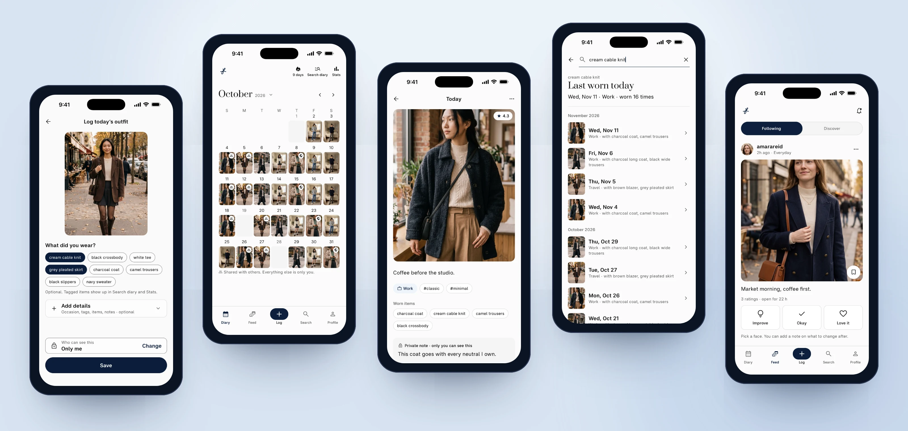
- DoneSurvey + PRD
- DoneV1–V2, tested with 5 people
- DonePivot to a diary
- DoneV3, AI-simulated testing
- NowBuilt, in App Store review
- NextReal-user testing
The product
Log every day, level up, and share for feedback when you want it.
- Log in secondsTake a photo and post it with a caption.
- Look backA month calendar, stats, and “last worn” search.
- Pick an audienceOnly me, Followers or Public, per entry. Private by default.
- Level upPoints for logging and streaks. Rating and giving feedback earn extra.
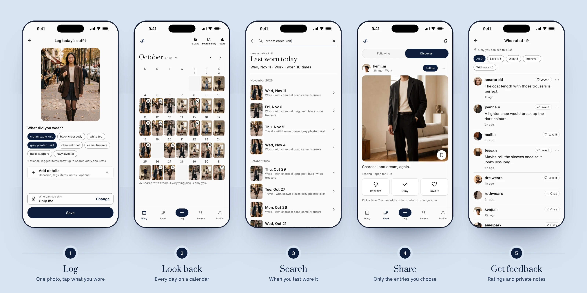
Design system
One set of components for every screen and state.
About 30 reusable Figma components (Auto Layout, Variants) cover every screen, including empty, error and offline states.
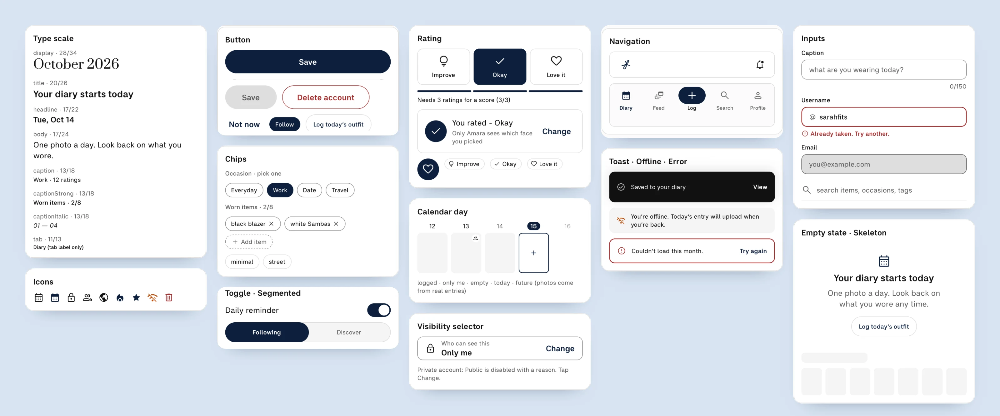
The pivot
V1–V2 tested well but needed a crowd. V3 keeps every feature and makes daily logging the core, so the app works with zero followers.
- New coreDaily logging: log, look back, and level up with streaks.
- Kept, already testedRatings, feedback notes and levels. Share an entry and the community helps you grow.
- New primary userSam, a style tracker. Chloe moves to the community layer.
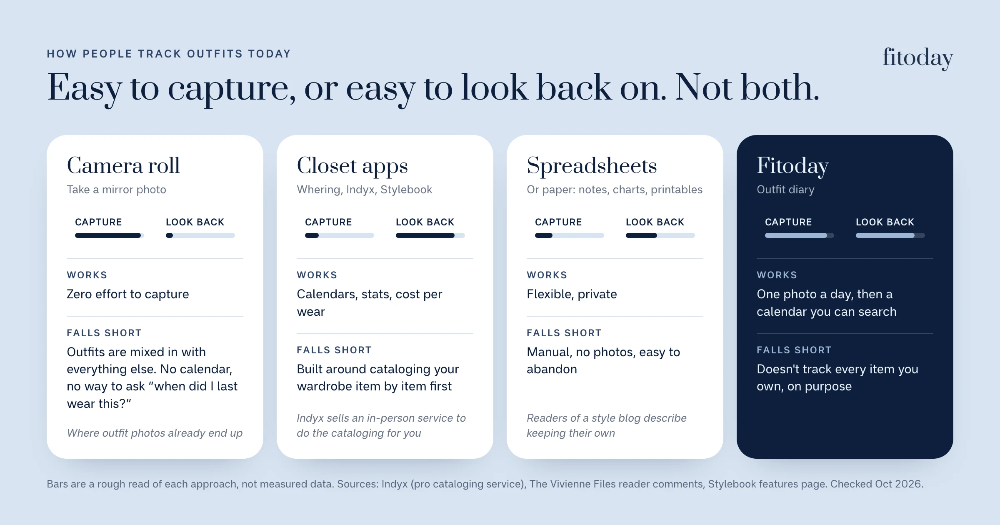
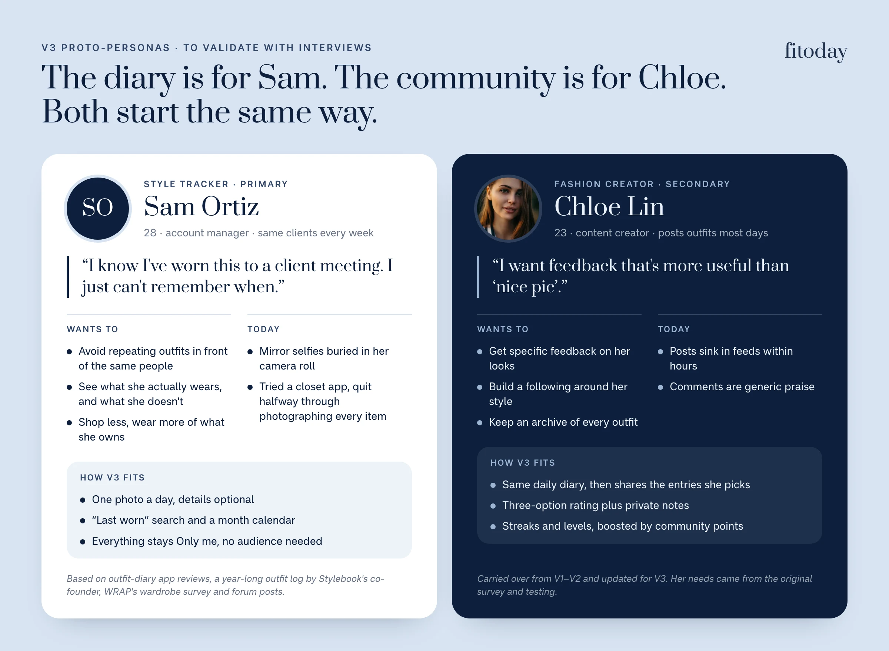
Background: the problem, V1–V2, user testing and the market check
Problem: Fashion apps are built for sharing outfits, not for improving them.
It started with a personal question. Scrolling Instagram, I kept wondering why some outfits looked put together and mine didn't. What I wanted wasn't more inspiration. It was honest feedback I could learn from.
To check whether that was just me, I ran a 12-person survey and reviewed the platforms people already use for fashion. The pattern was clear: there are plenty of places to post an outfit and almost nowhere built for constructive feedback on it. People also told me why they don't ask for it: they're afraid of being judged.
I am scared that people will judge me. I don't think my fashion sense is good enough.
Survey participantI am not an influencer, but I still want to improve my style.
Survey participantPosting on instagram everyday feels like a performance.
Survey participant
Instagram, Pinterest and TikTok are built for showing outfits, not improving them.
V1–V2: A feedback app: Post one outfit a day. Others rate it in one tap.
I designed for two people: Chloe, who posts and wants better feedback than “nice pic”, and Marcus, who wants to dress better but is afraid to ask.
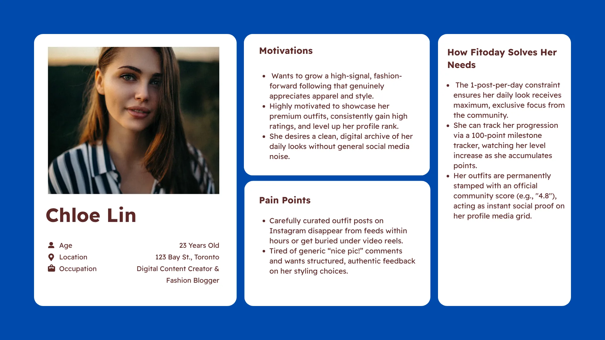
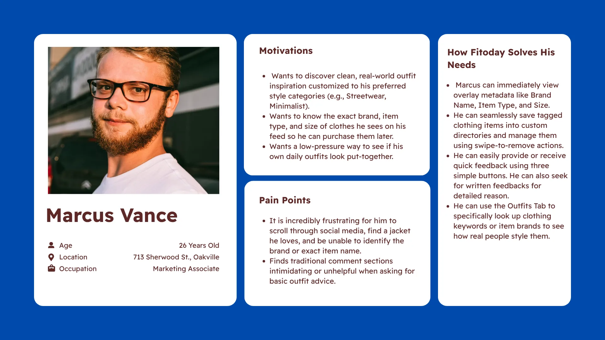
- One outfit a dayThoughtful posts, a calm feed, a habit people can keep.
- Three options, not likesImprove, Okay or Love it. Fast to tap, more useful than a like.
- 24 hours per postInstead of a midnight cutoff that punishes late posters.
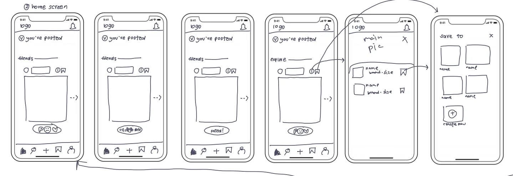
User testing: The rating worked. People wanted to say why, and a reason to come back.
Two rounds of think-aloud testing, V1 then V2, with the same five people.
- Rating was instantly clearAll five understood it with no explanation.Kept as is.
- A tap isn't enough“I want people to tell me where to improve.”Added an optional note, visible only to the poster.
- No way to undoA participant mis-tapped and couldn't fix it.Ratings can be changed for 24 hours.
- A reason to returnOne participant asked for a streak.Parked in the backlog. It later became the core of V3.
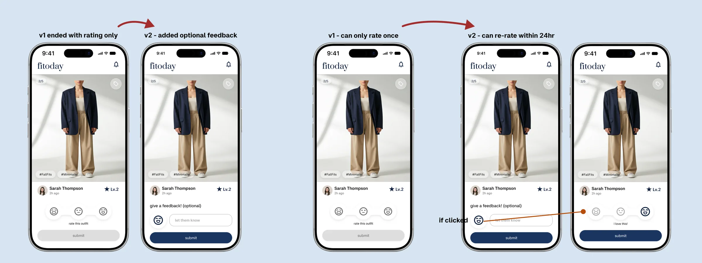
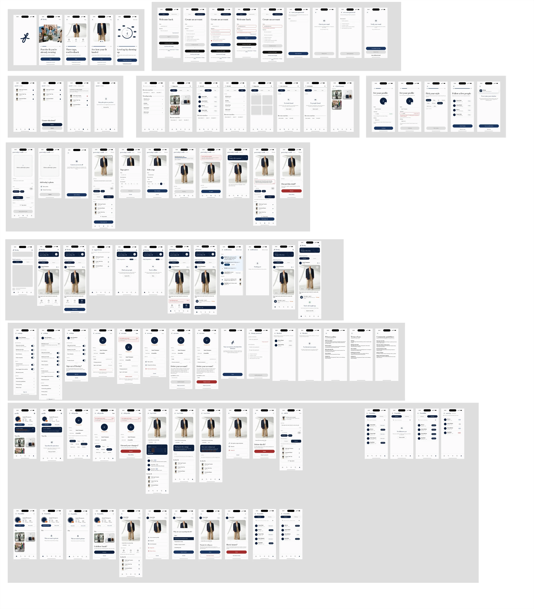
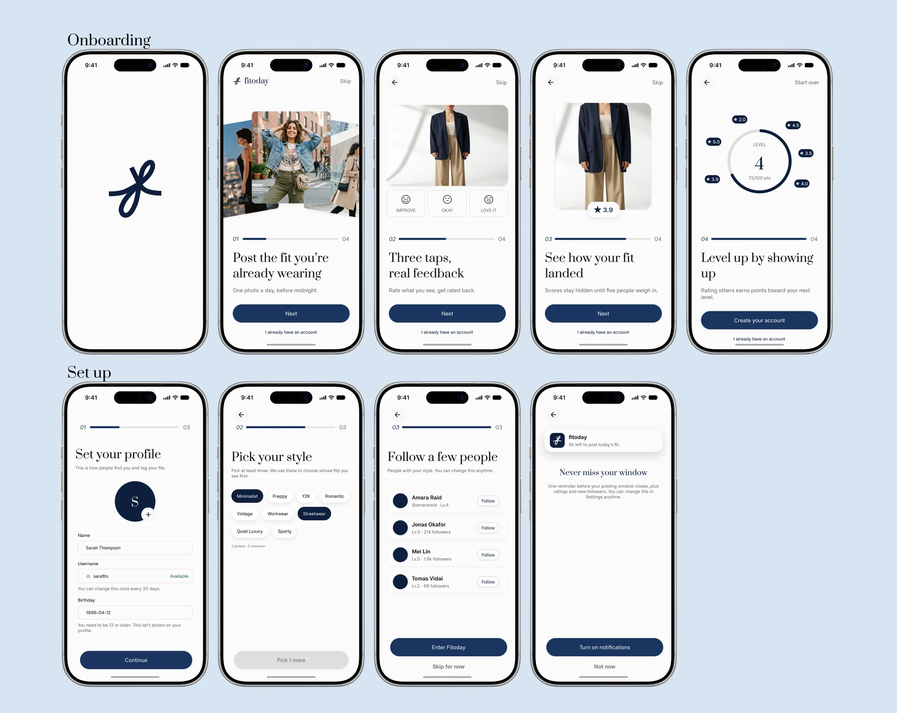
Market check: Users liked the interaction. But I hadn't planned for an app with few users.
Before writing code, I checked which outfit apps survive and where users leave.
- Similar apps don't lastLookbook.nu went offline in 2023. Go Try It On reached 400,000 users and still shut down.
- No plan for few usersA score needed 5 ratings. New users with no connections would post, get nothing back, and leave.
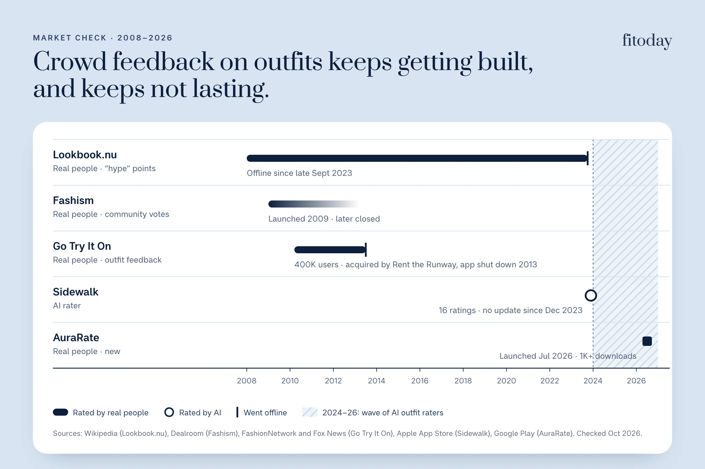
What I'd do differently
I tested whether people liked the product, but not whether it would hold up with few users, or in the market.
Next time, I will ensure the market check comes before the first wireframe. However, as I caught it before code, the only cost was a PRD rewrite, not a rebuilt app.
AI user testing
Few people to test with, so before coding I tested with AI, to see the design through eyes other than mine.
Two rounds of AI-simulated usability testing on the Figma screens: 8 personas, from an ideal user to a skeptic, a beginner and an accessibility-focused user, each trying the same 5 tasks.
- What workedThe primary action. Every persona found “Log today's outfit” right away.
- Biggest problemThe payoff depended on tagging items, but tagging was framed as optional. Photo-only logs left search and stats empty.
- Also foundNo camera screen designed, a confusing privacy choice, and ratings shown as a ★ average before you rate.
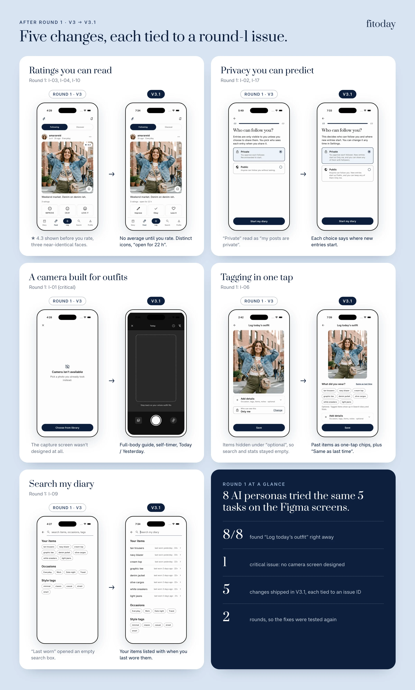
Round 2 re-tested the new screens with the same personas. It also caught a problem I had just created: the new item chips pushed “Who can see this” below the fold, right when it matters most.
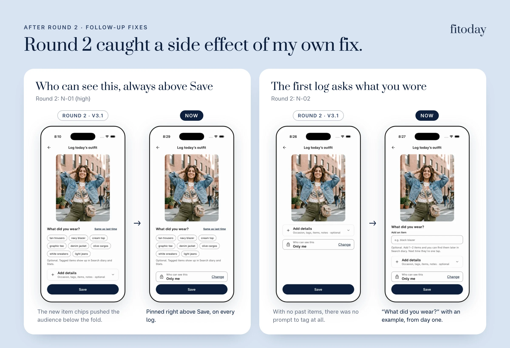
Build and launch
Built with Expo + Supabase and submitted to the App Store. Next: test the AI predictions with real users.
- StackExpo (React Native) + Supabase
- Safety firstSecurity and policy docs written before code.
- StatusIn App Store review (Nov 2026).
- NextTest with the first real users and compare against the AI-simulated predictions.
Reflection
Test whether a product survives with few users, not just whether people like it.
Think-aloud testing told me people liked the rating. It couldn't tell me that new users would post and get nothing back. Next time, the market check comes before the first wireframe.